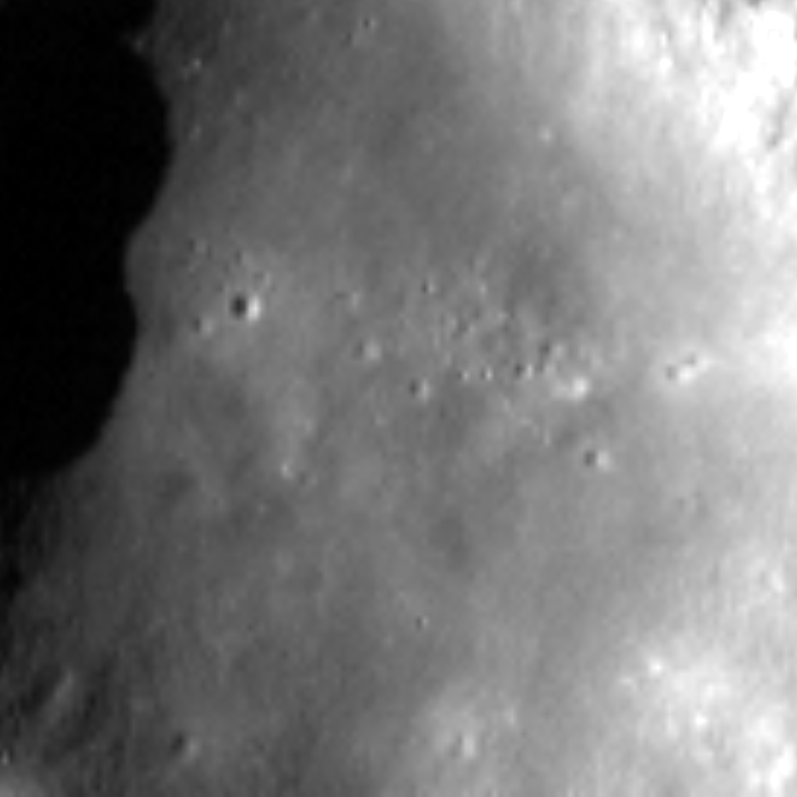
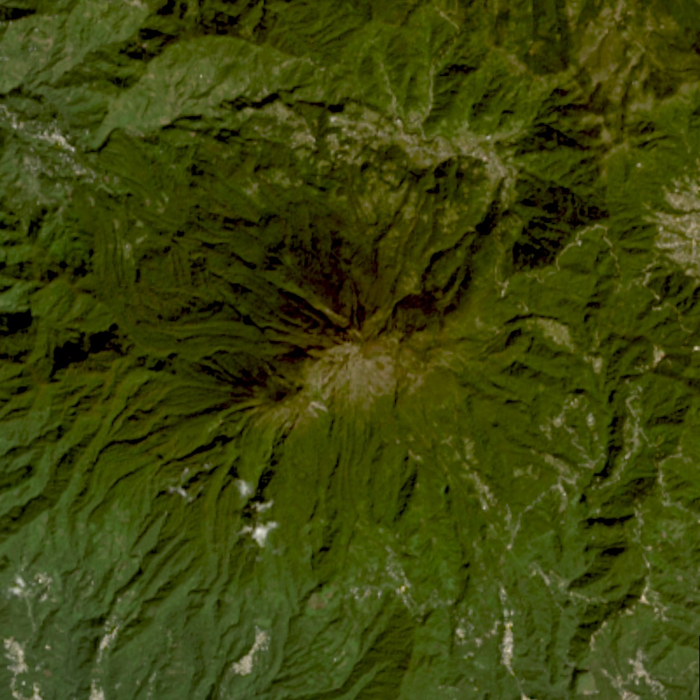

Image comparison
Loading images…
Approx. 12 × 12 km · North up


Earth · TacanáNote: Although the images may look different, the regions can share terrain characteristics such as slope and relief. Similarity is calculated from these measurements, not visual resemblance.
Image data
The divider reveals both complete images without stretching, rotating or artificially aligning their shapes. Acquisition dates for these mosaic crops have not been determined.
Sources, coordinates and original files · View 3D terrain models